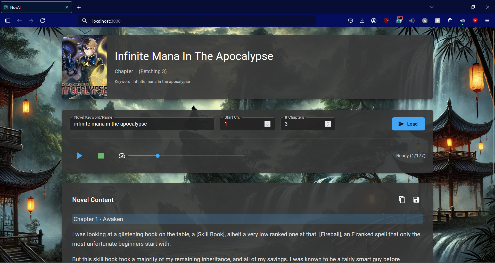

NovAI - Lecteur de Romans Interactif
Présentation
NovAI est une application web full-stack qui transforme les romans en ligne en une expérience d’écoute accessible. Elle combine la technologie de web scraping avec des capacités de synthèse vocale pour permettre aux utilisateurs de lire et d’écouter des romans avec une mise en surbrillance des paragraphes en temps réel.
Le projet comprend un frontend React avec Material UI pour l’interface et un backend Python (FastAPI/Flask) qui gère la récupération et le traitement des romans. Cette séparation des préoccupations permet une expérience utilisateur réactive tout en gérant efficacement le traitement des données côté serveur.

Histoire du Projet
En tant que lecteur passionné de webnovels, je me retrouvais à copier-coller manuellement les chapitres depuis les sites web dans des outils TTS juste pour les écouter. Ce processus a commencé par des allers-retours entre onglets et du copier-coller de chaque chapitre individuellement, puis a évolué vers une automatisation basique utilisant des scripts AHK. Finalement, j’ai découvert le web scraping, qui m’a permis de télécharger les chapitres par lots dans un fichier texte—accélérant considérablement le processus.
Ce workflow fonctionnait, mais il manquait d’élégance. Je voulais quelque chose de plus fluide, plus rapide et plus accessible—alors j’ai construit NovAI. Avec un pipeline frontend et backend complet, le scraping de chapitres est devenu instantané, et l’écoute fluide. Ce qui a commencé comme une solution personnelle à une tâche répétitive s’est transformé en un outil conçu pour le confort et l’efficacité.
Fonctionnalités Clés
- Récupération de Contenu de Romans : Recherche et récupération de romans par mots-clés depuis des sources en ligne
- Synthèse Vocale Interactive : Écoute de romans avec vitesse de lecture ajustable (0.5x à 2.5x)
- Suivi Visuel en Temps Réel : Les paragraphes sont surlignés pendant qu’ils sont lus
- Contrôles de Lecture Complets : Fonctionnalités de lecture, pause et arrêt
- Gestion de Contenu : Copier le texte dans le presse-papiers ou télécharger sous forme de fichiers TXT
- Design Responsive : Optimisé pour diverses tailles d’écran
- Mise en Cache de Contenu : Mise en cache côté serveur pour améliorer les performances
Stack Technique
Frontend
- React : Développement d’interface utilisateur basé sur des composants
- Material UI : Système de design pour un style et un thème cohérents
- Moteur TTS-Reader.com : Intégration de service de synthèse vocale externe
- React Hooks : Gestion d’état et cycle de vie des composants
- Fetch API : Communication avec les services backend
Backend
- FastAPI/Flask : Points d’API pour la récupération de contenu
- aiohttp/BeautifulSoup4 : Web scraping asynchrone
- SQLite : Base de données de mise en cache de contenu
- asyncio : Framework d’E/S asynchrone
- Pydantic : Validation de données et gestion des paramètres
Architecture

L’application suit une architecture client-serveur avec services externes :
- Client (React) : Gère l’interface utilisateur et la visualisation
- Moteur TTS-Reader.com : Fournit une fonctionnalité de synthèse vocale de haute qualité
- Serveur (FastAPI/Flask) : Gère la découverte de romans, le scraping de contenu et le traitement de texte
- Base de Données (SQLite) : Met en cache le contenu scrapé pour améliorer les performances et réduire la charge sur les sites sources
Détails d’Implémentation
Implémentation Frontend
L’application React fournit une interface intuitive pour la lecture de romans avec ces composants principaux :
- Interface de Recherche : Permet aux utilisateurs de spécifier les mots-clés de romans et les paramètres de chapitres
- Affichage de Contenu : Rend le contenu de roman récupéré avec un formatage approprié
- Intégration Moteur TTS : Se connecte aux capacités natives de synthèse vocale du navigateur
- Système de Suivi Visuel : Surligne les paragraphes en temps réel pendant la lecture
- Layout Responsive : S’adapte à différentes tailles d’écran en utilisant Material UI Grid
// Exemple d'implémentation TTS avec le moteur TTS-Reader.com
useEffect(() => {
if (!window.wsGlobals || !window.wsGlobals.TtsEngine) {
console.error("TTS engine (wsGlobals.TtsEngine) is not available.");
return;
}
const tts = window.wsGlobals.TtsEngine;
ttsRef.current = tts;
tts.init({
onInit: (voices) => {
console.log("TTS Initialized.");
tts.setRate(readingRate);
try {
tts.setVoiceByUri("urn:moz-tts:sapi:Microsoft Zira Desktop - English (United States)?en-US");
} catch (e) {
console.warn("Could not set preferred voice, using default.", e);
}
},
onStart: () => { console.log("Speech started for a segment."); },
onDone: handleSpeechDone,
onError: (err) => {
console.error("TTS Error:", err);
setIsPlaying(false);
highlightParagraph(-1);
}
});
// Fonction de nettoyage
return () => {
if (timerRef.current) clearTimeout(timerRef.current);
if (ttsRef.current) ttsRef.current.stop();
ttsRef.current = null;
};
}, [textArray, readingRate, speakParagraph]);Implémentation Backend
Le backend Python gère le gros du travail de récupération de contenu :
- Recherche de Romans : Trouve le bon roman basé sur les mots-clés utilisateur
- Scraping de Contenu : Extrait le contenu des chapitres depuis les sources web
- Traitement de Texte : Nettoie et formate le texte pour une lecture/écoute optimale
- Formatage de Réponse : Retourne des données structurées avec du contenu brut et formaté
- Système de Cache : Stocke le contenu précédemment récupéré pour améliorer les performances
async def get_text(keyword, chapter, number):
async with aiohttp.ClientSession(headers=headers) as session:
urls, novel_title, novel_image = await get_urls(session, number, chapter, keyword)
tasks = [get_page_content(session, url) for url in urls]
texts = await asyncio.gather(*tasks)
text = '\n'.join(texts)
text = preprocess(text)
text_array = [par.strip() for par in text.split("\n")]
text_formatted = "".join([f'<p id="par{i}">{par}</p>' for i, par in enumerate(text_array)])
return {
'text': text,
"title": novel_title,
"image": novel_image,
"formatted": text_formatted,
"array": text_array
}Défis et Solutions
| Défi | Solution |
|---|---|
| Fiabilité du Web Scraping | Implémentation de gestion d’erreurs robuste et mécanismes de fallback |
| Performance TTS | Optimisation du traitement de texte pour une meilleure synthèse vocale |
| Variété de Contenu | Développement d’une logique d’analyse flexible pour gérer différents formats de romans |
| Limitations Cross-Origin | Configuration appropriée de la gestion CORS sur le backend |
| Suivi de Position de Lecture | Création d’une synchronisation personnalisée entre texte et voix |
Améliorations Futures
- Comptes Utilisateur : Sauvegarder la progression de lecture et les préférences
- Support de Voix Personnalisées : Permettre aux utilisateurs de sélectionner différentes voix TTS
- Support Hors Ligne : Capacités Progressive Web App pour la lecture hors ligne
- Recherche Avancée : Filtrer les romans par genre, auteur et note
- Applications Mobiles : Versions mobiles natives pour iOS et Android
- Support Multi-langues : Élargir au-delà du contenu anglais
Leçons Apprises
Le développement de NovAI a fourni des insights précieux sur :
- Intégration Full-Stack : Équilibrer les responsabilités frontend et backend
- API Web Speech : Travailler avec la synthèse vocale basée sur le navigateur
- Traitement Asynchrone : Gérer les opérations concurrentes en Python
- Design d’Expérience Utilisateur : Créer une interface intuitive pour le contenu audio
- Traitement de Contenu : Transformer le contenu web en formats accessibles